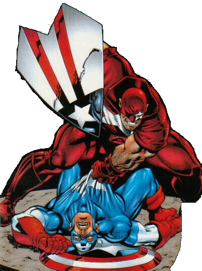

Protocide
Protocide was Clinton McIntyre. He wasn't really a role model in the behavior department. In fact he was participating in PROJECT: PROTOTYPE because he figured it was preferable to being shot for killing his commanding officer. McIntyre took the serum without Erskine's knowledge and died because the formula was incomplete. Decades later McIntyre would be revived by A.I.M. (Advanced Ideas Mechanics). Protocide was led to believe that Captain America killed him to usurp his position in the hearts of America.